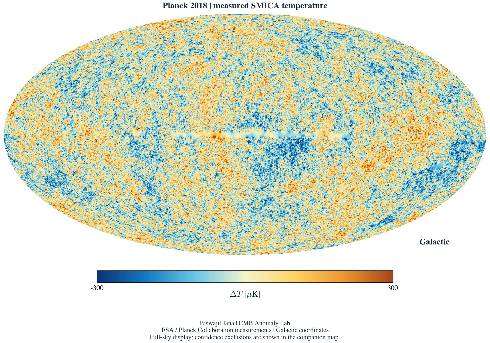
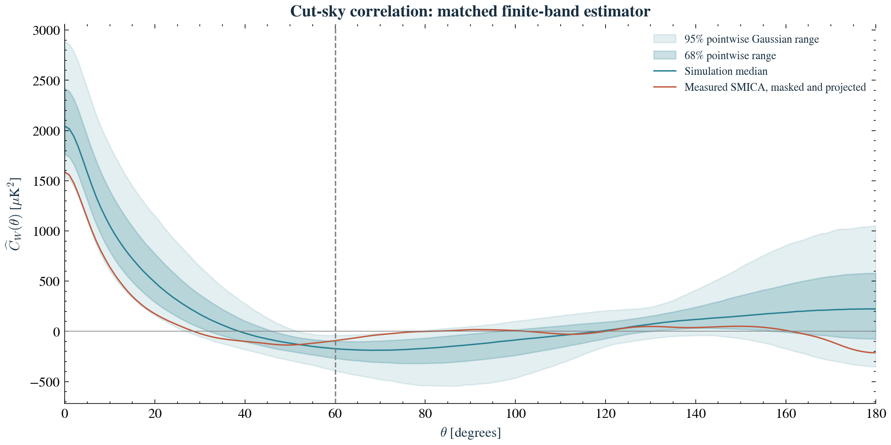
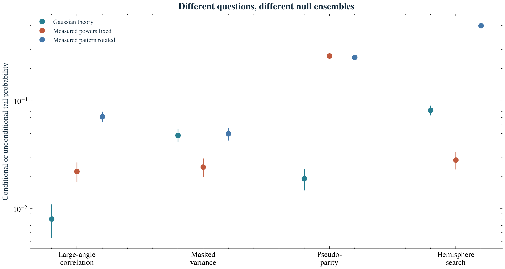
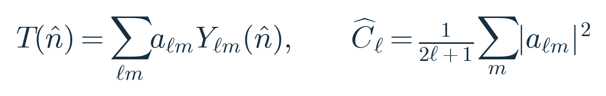
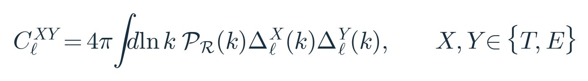

Large-angle correlation
Local lower-tail probability for the defined masked-sky statistic. Accounting for the four baseline map diagnostics gives a family probability of about 0.031.
Inspect the map results →COSMIC MICROWAVE BACKGROUND · PLANCK PR3
From measured sky pixels to mathematical physics. An open investigation of the largest patterns in the cosmic microwave background.

Data: ESA / Planck Collaboration · NASA/IPAC IRSA
Rendering and analysis: Biswajit Jana
The coloured regions are temperature fluctuations, not individual galaxies. Their interpretation involves density perturbations, velocities, gravitational redshifts and the propagation of photons. The visual map is produced directly from the released FITS measurements.
The introductory Python notebook takes you from the archive file to a finished map, then through the statistical and physical experiments.
All 19 code cells were executed in a local Python kernel. The saved notebook is Google Colab compatible; no execution on Google infrastructure is claimed.
Download official spectra and the SMICA FITS map. Check hashes, units, coordinates and pixel ordering.
Convert kelvin to microkelvin, project the sphere, apply the blue-orange palette and inspect the confidence mask.
Calculate correlations, draw Gaussian skies and repeat the same mask and direction searches on every realization.
Propagate primordial suppression with CAMB and inspect its temperature and polarization consequences.
Use a Python CPU runtime and run cells in order. The first run retrieves about 2 GB of official data. The original map stays at the scientific archive; this website hosts the notebook, generated figures, results and report. No Google Drive access is required.
Local lower-tail probability for the defined masked-sky statistic. Accounting for the four baseline map diagnostics gives a family probability of about 0.031.
Inspect the map results →Holding the measured quadrupole fixed makes the spectral correlation statistic less unusual. This diagnoses dependence; it does not explain the quadrupole.
Inspect the spectral results →The tested primordial-suppression family is not compellingly preferred after repeating its parameter search on 100,000 null spectra.
Inspect the physical model →
They quantify results under stated, idealized models. The map null includes the chosen mask and nuisance-mode projection, but does not propagate realistic noise, foreground-cleaning uncertainty or cosmological-parameter uncertainty. The studies do not establish a new physical origin for CMB anomalies, and their probabilities are not combined into a project-wide discovery claim.
Hold every angular power fixed. Rearrange the harmonic structure. Then rotate the complete measured sky relative to the Galactic mask.
Three controlled experiments separate questions that a single anomaly probability cannot answer.
The advanced notebook runs 18,432 null and randomized skies, followed by 5,120 paired signal injections. Saved outputs include measured and randomized maps, simultaneous correlation envelopes and detection-power curves.
All 13 cells executed locally with real Planck inputs. The notebook is Colab compatible.

| Null ensemble | Correlation S lower-tail p | Hemisphere upper-tail p | Held-out envelope coverage |
|---|---|---|---|
| Gaussian theory | 0.0081 | 0.0820 | 94.7% |
| Measured powers fixed | 0.0222 | 0.0283 | 94.6% |
| Measured pattern rotated | 0.0715 | 0.4982 | 96.0% |
Five toy dipole-modulation amplitudes are tested against a threshold fixed by independent Gaussian skies. Detection power and direction recovery reveal what a nondetection can—and cannot—tell us.
Read the results and injection curves →These experiments use processed full-sky coefficients. Foreground uncertainty and mixing across mask boundaries remain. The modulation is injected after smoothing; it is not a fitted primordial amplitude.
Read the derivations and limitations →Three independent held-out sets check the 95% simultaneous prediction envelopes on 121 specified angles. Validation record · Download numerical outputs
Expand the sky in spherical harmonics, estimate angular power, then reconstruct correlations. A physical alternative must also predict polarization through the same transfer functions.

